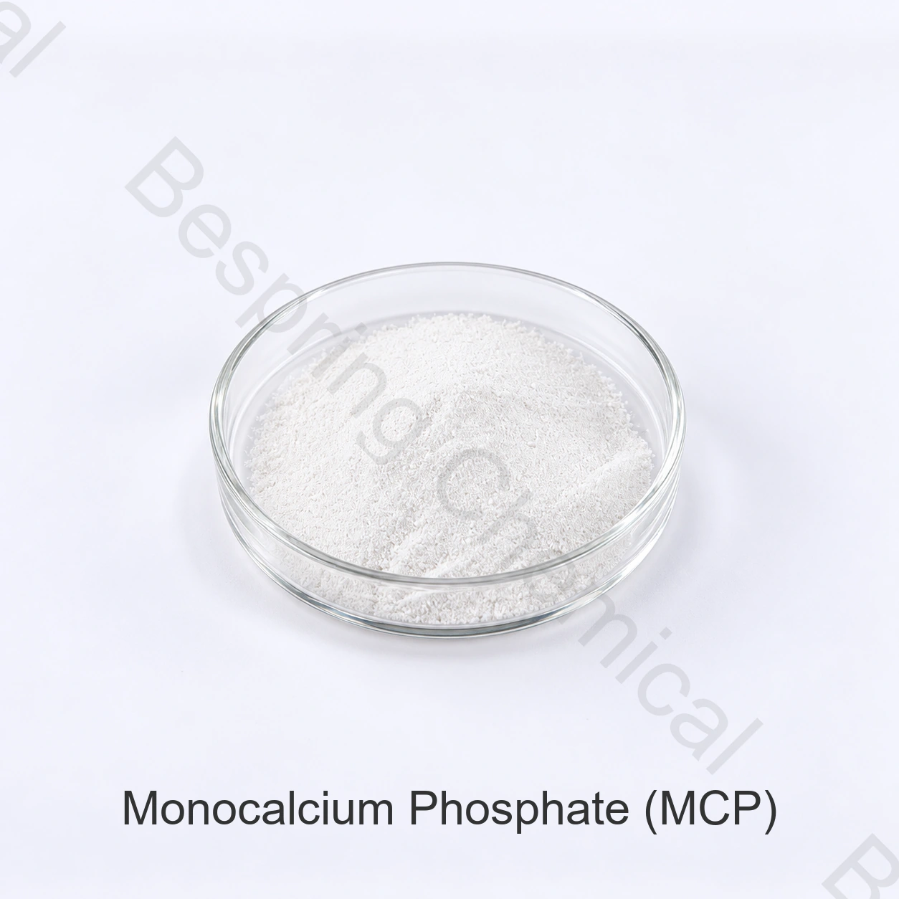

MCP خالي من الماء
فوسفات الكالسيوم الثنائي الهيدروجين بدون ماء بلوري. صيغته هي Ca(H2PO4)2 ورقم CAS للشكل اللامائي هو 7758-23-8.
- فقدان الحرارة المرتبط بالترطيب أقل
- المرجع الشائع للكالسيوم: حتى 17.7%
- تأكيد حجم الجسيمات وأداء التخمير
مكون غذائي · فوسفات الكالسيوم الحمضي · INS 341(i)
فوسفات أحادي الكالسيوم فوسفات حمضي يُقيَّم كحمض رفع مع البيكربونات، وفي تطبيقات غذائية مناسبة لتحسين العجين أو الإمداد بالمعادن. يتطلب اختيار الدرجة تحديد الشكل اللامائي أو أحادي الماء وسلوك التفاعل.
تضمّن الشكل المطلوب، المعيار، الكمية، الوجهة وتطبيق الطعام للعرض المناسب.

نظرة عامة على المنتج
فوسفات أحادي الكالسيوم، أو ثنائي هيدروجين فوسفات الكالسيوم، رقمه INS 341(i). صيغته اللامائية Ca(H2PO4)2، وصيغة أحادي الماء Ca(H2PO4)2·H2O.
في أنظمة المخابز، يتفاعل MCP مع مكونات التخمر القلوية ليطلق ثاني أكسيد الكربون. كما أن طابعه الحمضي ومحتواه المعدني يجعلان من تكوين الترطيب، وملف الجسيمات، والسلوك المعادل، والامتثال لسوق الوجهة متغيرات شراء مهمة.
حدد شكل الترطيب
تختلف الأشكال في محتوى بللورات الماء، ووزن الصيغة، والسلوك التحليلي. حدد الشكل المطلوب في مواصفات الشراء بدلاً من الطلب باستخدام الاختصار "MCP" فقط.
فوسفات الكالسيوم الثنائي الهيدروجين بدون ماء بلوري. صيغته هي Ca(H2PO4)2 ورقم CAS للشكل اللامائي هو 7758-23-8.
فوسفات الكالسيوم الثنائي الهيدروجين يحتوي على جزيء ماء واحد من البلورة. صيغته هي Ca(H2PO4)2·H2O ويشير مرجع هوية JECFA إلى CAS 10031-30-8.
وظائف معالجة الأغذية
مستويات الاستخدام الفعلية وفئات الطعام المسموح بها تعتمد على التركيبة وسوق الوجهة. اكمل التجارب التقنية والمراجعة التنظيمية قبل الاستخدام التجاري.
مكوّن حمضي يُستخدم مع البيكربونات في مسحوق الخبز، والدقيق الذاتي التخمر، والصياغات المخبزية المناسبة.
يُستخدم في دقيق التأهيل وأنظمة المخابز كمُعالج للعجين ومساعد في التكوين.
يوفر الكالسيوم والفوسفور في الأطعمة المدعمة المناسبة، والخليط المسبق، وتركيبات التغذية.
قد يخدم كمصدر للمعادن في عمليات الغذاء المعتمدة على الخميرة وأنظمة التخمير المحددة.
تُقيَّم الوظيفة الحمضية والتوافق مع المكونات في الوصفة المسموح بها، ولا يُفترض أداء ثابت لكل درجة.
مناسب للخلائط الجافة المختارة وأنظمة المكونات المركبة بعد اختبار معدل التفاعل والتوافق.
معلومات تقنية
القيم أدناه مواصفات تجارية مرجعية، وليست نتائج دفعة أو إثبات مطابقة معيار بعينه. تُحدد حدود القبول وطرق القياس وأساس النتائج في مواصفة الشراء.
| عنصر الاختبار | وحدة | المواصفات المرجعية |
|---|---|---|
| المظهر | — | بودرة بيضاء كريستالية أو رقائق كريستالية |
| محتوى الكالسيوم (كـ Ca) | % | 15.9–17.70 |
| P2O5 المحتوى | % | 50.0–52.5 |
| اختبار التعريف | — | إيجابي |
| محتوى CaO | % | 19.0–24.8 |
| زرنيخ (As) | % | ≤ 0.0003 |
| الفلوريد (F) | % | ≤ 0.0001 |
| المعادن الثقيلة (كمقدار Pb) | % | ≤ 0.0015 |
| الرصاص (Pb) | % | ≤ 0.0005 |
| الكادميوم (Cd) | % | ≤ 0.0001 |
| الزئبق (Hg) | % | ≤ 0.0001 |
| الفقد عند الاشتعال | % | ≤ 1.0 |
| الفقد عند التسخين | % | ≤ 17.0 |
| اختبار الوضوح | — | اجتياز |
| اختبار الكربونات | — | اجتياز |
| اختبار الأحماض والأملاح القاعدية القابلة للفصل | — | اجتياز |
أساس المقارنة والقبول: تُحدد اختبارات الكالسيوم وCaO وP₂O₅ كلٌّ على أساسه التحليلي، ولا تُعامل كقيم متبادلة. تحتاج حدود P₂O₅ والزرنيخ والفقد بالحرق والتسخين إلى مواصفة معتمدة وطرق قياس وحالة إماهة محددة قبل القبول التعاقدي؛ ولا تمثل القيم التجارية إثبات مطابقة معيار بعينه.
للهوية المستقلة وسياق مكوّن غذائي، انظر المونوغرافية FAO/WHO JECFA لثنائي هيدروجين فوسفات الكالسيوم و سجل مركب PubChem التابع لـ NIH.
التخزين والمناولة
أسئلة المشتري
يُقيَّم MCP كحمض رفع مع البيكربونات، ولمعالجة العجين وتغذية الخميرة أو المساهمة المعدنية في التطبيقات المناسبة. يحدد الشكل والدرجة والوصفة ومتطلبات السوق الوظيفة الفعلية.
MCP اللامائي هو Ca(H2PO4)2. مونوهيدرات MCP هو Ca (H2PO4)2·H2O ويشمل ماء واحد من التبلور. هذا يغير الوزن الجزيئي، وفقدان التسخين وسلوك المعالجة.
لا. فوسفات الكالسيوم الأحادي (MCP)، فوسفات الكالسيوم الثنائي (DCP) وفوسفات الكالسيوم الثلاثي (TCP) هي أملاح مختلفة من فوسفات الكالسيوم. تختلف نسب الكالسيوم إلى الفوسفور فيها، والحموضة، والقابلية للذوبان، ووظائفها الغذائية.
التعبئة المرجعية هي 25 كغ لكل كيس، مع الحد الأدنى المعلن للطلب وهو 500 كغ. التحميل المرجعي هو 23 طن متري لكل حاوية 20 قدم. يرجى تأكيد ترتيب المنصات والتحميل حسب الوجهة قبل الطلب.
اطلب مستندات HACCP وحلال وكوشر وISO السارية، مع نطاق المنتج وموقع التصنيع وفترة الصلاحية المطلوبة.
قدم شكل الترطيب، والمواصفات أو المعيار المطلوب، ومتطلبات حجم الجسيمات أو معدل التفاعل، والكمية، والتعبئة، وبلد الوجهة أو الميناء، والتطبيق الغذائي المقصود وتاريخ التسليم.
بدء محادثة توريد
شارك التفاصيل الفنية واللوجستية التي تحدد اختيار المنتج وتكلفة الوصول إلى الوجهة. يمكن لفريقنا حينها الرد بالمستندات ذات الصلة وعرض تجاري.